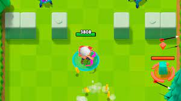

A little about the game: This is a mobile role playing game that allows the user which is the archer to move around the various maps and levels in order to progress into the enemies.
The enemies can shoot and kill your archer however your archer can shoot arrows
at the enemies automatically while the archer moves around. Be aware that you can dadge the enemy hits if you are
fast enoguh but the further you are, the harder the levels become. There are a total of seven worlds that you may enter
The player has to defeat over 50 enemies for each level so the levels are challenging to complete, but at the beggining of the game,
the user may choose their preferred abilities that they would want to start off with in order to better their chances against
the enemies.

This is a picture of the archero character that is moving around the
map in order to try to complete the level and destroy the enemy.
This is the first default character
that you receive when you first start the game
however as you progress through the game, you can obtain much
cooler character like mine on the Archer page. The first map is green then
they get darker and darker over the next six worlds that you enter.